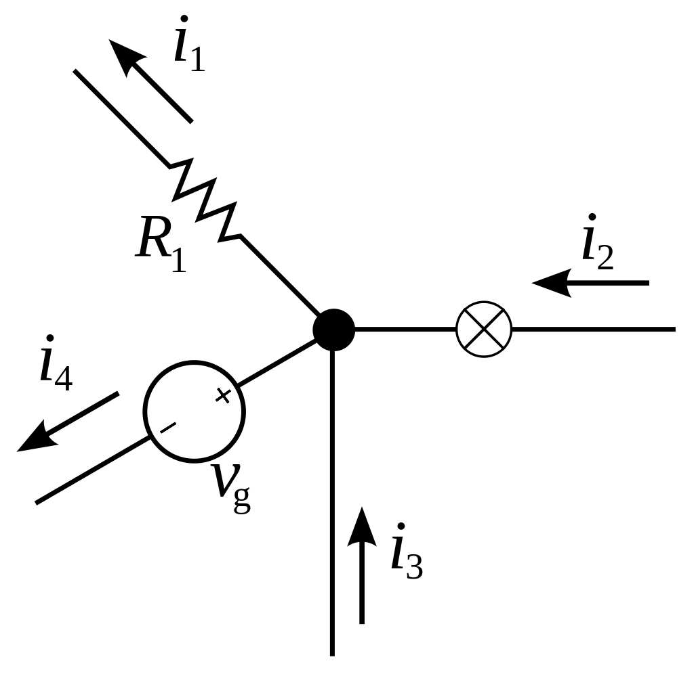
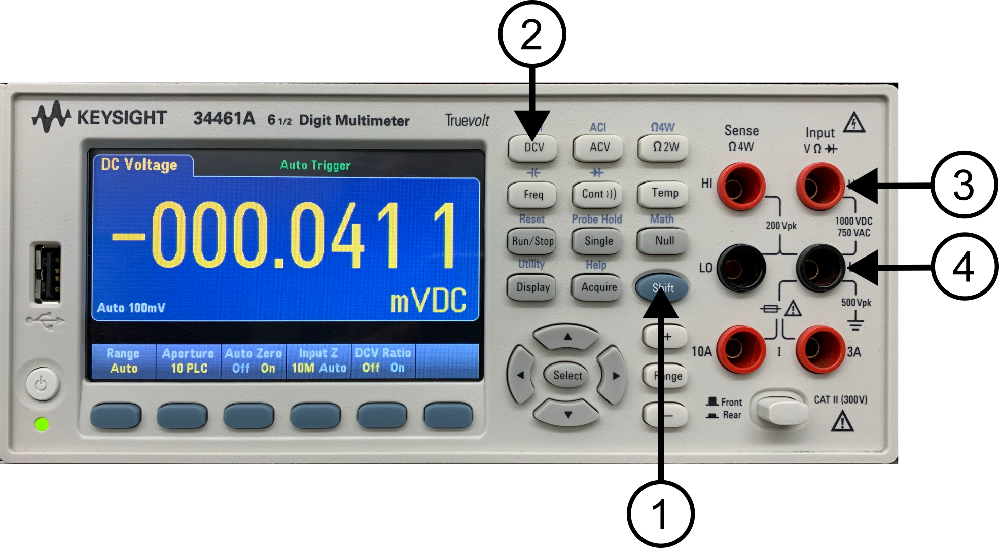
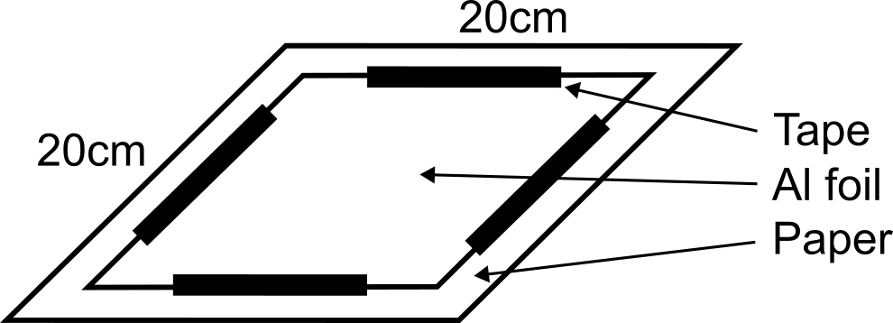
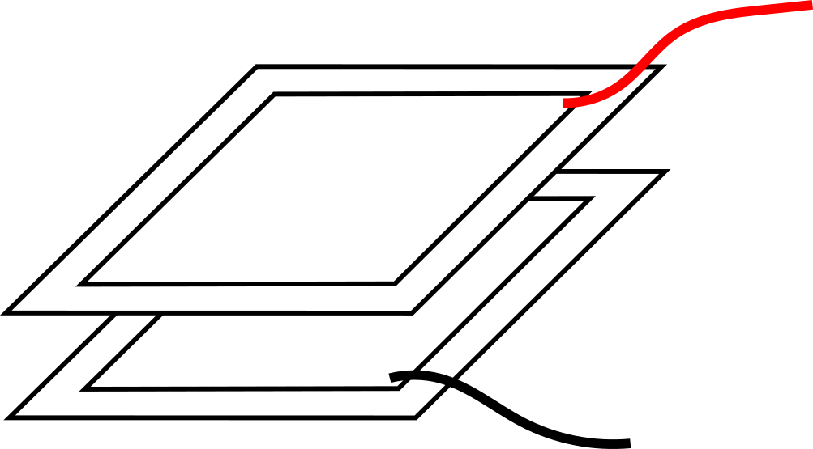
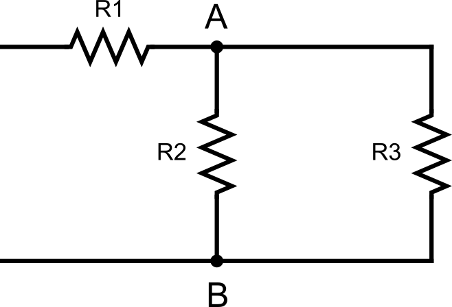
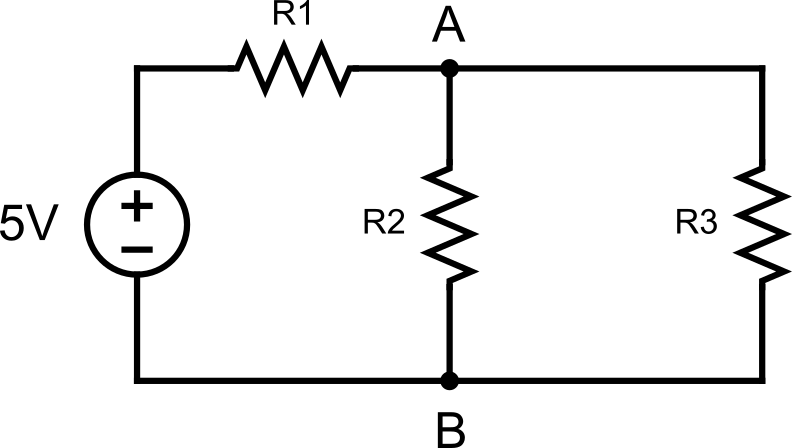

Lab 5 : Capacitor and Resistor Circuits
Seneca College SES250 Electromagnatics
Objectives
- To understand the relationship between the capacitance and the separation distance of a parallel sheets capacitor
- To understand and verify Kirchhoff's Law
Purpose
- Assemble electronic components onto a breadboard
- Measure the capacitance of a capacitor using a digital multimeter (DMM)
Important Rules for this Lab
- Any signal (voltage, current) must be adjusted to the specified value (amplitude and/or frequency) before applying them to a circuit.
- An instrument must be set up for the required mode of operation before it is connected to a circuit.
- The power supply must be switched off before making any changes to the circuit.
Description
A capacitor is an electronic device for storing electrical energy, consisting of two conductors in close proximity and insulated from each other. A simple example of such a storage device is the parallel-plate capacitor. If positive charges with total charge +Q are deposited on one of the conductors and an equal amount of negative charge −Q is deposited on the second conductor, the capacitor is said to have a charge Q.
Source: Britannica: capacitor
The capacitance of a parallel plate capacitor can be calculated using:
where is the permittivity in vacuum and have a value of , is the area of the plates, and is the distance between the plates.
When analyzing electronic circuits, a method often used is Kirchhoff's current law (KCL). KCL, Kirchhoff's first law, or Kirchhoff's junction rule, states that, for any node (junction) in an electrical circuit, the sum of currents flowing into that node is equal to the sum of currents flowing out of that node; or equivalently: the algebraic sum of currents in a network of conductors meeting at a point is zero:

Figure 5.1 The current entering any junction is equal to the current leaving that junction. i2 + i3 = i1 + i4
Source: Wikipedia: Kirchhoff's circuit laws
Materials
- Aluminum foils
- Letter-size printer paper
- Tape
- 1kΩ or similar value resistor
- 10kΩ or similar value resistor
- Breadboard
- Jumper wires
Preparation
Lab Preparation Question:
Copy the following table with at least 10 trials into your notebook for Part 1 of this lab:
Trial # of sheet Separation (mm) Measured C [nF] Foil C [nF] 1 ... Using the circuit shown in Part 2 Step 4 along with R1 = 1kΩ, R2 = R3 = 10kΩ. Calculate , , , using Kirchhoff's Current Laws
Sketch the breadboard below onto your notebook then draw how the components will be connected to the breadboard according to the circuit shown in Part 2 Step 4. Clearly show which tie point will the wire, resistor and power supply be attached to.
Repeat the previous step three times to sketch the breadboard connection diagram for each of the following:
- Include a DMM as a voltmeter to measure the voltage between node A and node B
- Include a DMM as an ammeter to measure the current through R1
- Include two DMM each as an ammeter to measure the current through R2 and R3
Voltage A-B () Current of R1 () Current of R1 () Current of R1 () Calculated Value

Procedures
Part 1: Parallel Plate Capacitor
In this part of the lab, we will be exploring the capacitance of a parallel plate capacitor.
-
Turn on a DMM and set it to capacitance mode by pressing the SHIFT (1) + Freq (2) button (to access the -||- mode). Ensure the alligator clips are connected to the terminals labelled “HI” under “Input VΩ►|” (3) and “LO” under “Input VΩ►|” (4).

Figure 5.2
Lab Question 1: Record the capacitance with the alligator clip not connected to anything. This is the capacitance due to just the cable.
-
Obtain two pieces of aluminum foil of about 20cm x 20xm in size and obtain several sheets of paper that are larger than the aluminum foil. Record the size of each aluminum foil.
Lab Question 2: Record the size of the capacitor.
-
Tape each aluminum foil to a piece of paper with the corners not taped for an alligator clip connection.

Figure 5.3
-
Connect the red alligator clip from the DMM to one corner of the first aluminum foil and the black alligator clip to another corner of the second aluminum foil as shown in Figure 5.4.

Figure 5.4
-
Arrange the aluminum foil and papers as per the figure below to create a parallel plate capacitor. Use a flat weight (ie. a textbook) to keep the capacitor in place.
NOTE: It is very important to ensure the two aluminum foils are not touching and isolated by the paper. Also, ensure the aluminum foils and papers stack is as close to each other as possible with no air gap in between.
-
Record the capacitance then repeat the test for other thicknesses by increasing the number of sheets of paper in between the aluminum foil. Increment in multiple of 3-5 sheets. Each sheet of 20lbs paper is about 0.097mm.
NOTE: It is important to ensure the weight apply and its application is the same throughout the entire experiment. Also, as the weight settles onto the aluminum foils and papers stack, it will continuously press the parallel foils closer. Just choose a consistent settling time for each step when recording the capacitance value because we cannot wait until the weight completely settles.
-
Conduct at least 10 trials of various thicknesses or until a change in capacitance can no longer be observed.
Lab Question 3: Record your observation in the table below. Foil Capacitance = Measured Capacitance - Cable Capacitance, .
Trial # of seperating sheet Separation (mm) Measured C [nF] Foil C [nF] 1 ... Note: The capacitor setup already has one sheet as a separation
Lab Question 4 (Post-Lab): Using the area of the aluminum foils you measured and the separation distance of each step from your experiment into the relationship. Plot your results (Capacitance along the y-axis and separation distance along the x-axis) then draw the trend line. This can be done by hand or software. Hint: It's not a linear relationship.
Lab Question 5 (Post-Lab): Calculate the coefficient for the trend line. Does it agree with the theoretical value of ? Explain why you think it is the same or not the same as the theoretical (other than human measurement error).
-
Disconnect the DMM and return the aluminum foil once you are done.
Part 2: Resistors in Parallel and in Series
In this part of the lab, we will be exploring resistors in parallel and series configurations.
-
Obtain a 1kΩ resistor, two 10kΩ resistors, a breadboard and a few jumper wires. If the resistor value is not available, use resistors of similar value.
-
Turn on the DMM at your workbench and turn it to the “Ω 2W” resistance measurement mode. Measure and record the resistance of each resistor.
Lab Question 6: Record the resistance (at least 3 S.F.) of each resistor in the table below:
R1 (1kΩ) R2 (10kΩ) R3 (10kΩ) Measured Resistance [kΩ] -
Assemble the circuit shown below then measure the resistance between node A and node B.

Figure 5.5
Lab Question 6: Does the measured resistance agree with the value you calculated in the pre-lab? What is the percentage error? Is it within the tolerance of the resistor?
-
Assemble the circuit shown below then measure the following as per the circuit and connection diagram you prepared in the pre-lab:
- the voltage between node A and node B
- the current through R1, R2, R3

Figure 5.6
Lab Question 7: Record the measured values in the table below.
Voltage A-B () Current of R1 () Current of R1 () Current of R1 () Measured Value Lab Question 8: Does the measured value agree with the value you calculated in the pre-lab? What is the percentage error? Is it within the tolerance of the resistor?
Once you've completed all the above steps, ask the lab professor or instructor over and demostrate you've completed the lab and written down all your observation. You might be asked to explain some of the concepts you've learned in this lab.
Post-Lab
- Using the skills and knowledge acquired from this lab, answer the post-lab question(s) on blackboard. Due one week after the lab.